Bass Something 2
Bass Something 2 turns the M-VAVE FM-1 into a monosynth inspired by the Novation Bass Station II. It has two oscillators and a sub, a ring modulator and noise. The filter is Classic (low, band or high pass at 24 or 12 dB) or Acid (a diode ladder), with drive and distortion. It has a mod envelope, an amp envelope, two LFOs, the Bass Station II's 32 arp rhythms with its 32-step sequencer (four sequences) and 32 patches. Patches go to and from a Bass Station II editor as SysEx. Everything shows on the FM-1's screen as a small Bass Station II front panel, and MIDI goes in and out over USB, Bluetooth and TRS.
It's also a companion for Cyma Forma's RND Synth (firmware 1.4): it keeps 32 of its patches as seeds with their locks (type, key, tracks), sends them back, and mixes its four tracks (see RND Synth).
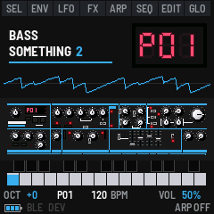
1Install
Try it first: the emulator runs the same code in the browser, with sound. Play it with the mouse, a touch screen or the computer keyboard.
Install from the browser: in Chrome or Edge, connect the FM-1 by USB, open the installer and press Install. The browser asks once to allow MIDI: allow it. Don't unplug the cable while it writes.
Install from a terminal: python3 tools/fm1_install.py bass-something-2-VERSION.fwsc.
On an iPhone or iPad, in RemoteFM1: download bass_something_2-VERSION.rfm1 from the release and put it in RemoteFM1's firmware folder. It's the same firmware, running in the app as an instrument or an AUv3, with the panel, the screen, sound and MIDI. There's no Bluetooth or USB host there, and the app keeps the saved patches and settings.
Back to the stock firmware: the installer's last section writes M-VAVE's own firmware back. An FM-1 that doesn't start can be recovered too. For details, see felucca-bsp's tools/fm1_rescue.sh.
At power-on the screen shows BASS SOMETHING 2 in cyan, "Inspired by the Bass Station 2" under it, and an oscilloscope whose wave morphs from sine to triangle to saw to a sweeping pulse. The firmware's version (such as v0.6) is in the bottom right corner. Then the panel opens on the patch you last saved. The emulator shows the same splash when you switch it on.
2The screen
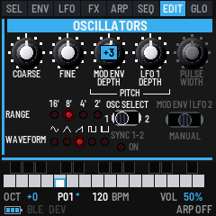
The screen is a small Bass Station II front panel. Every page is drawn as one of its sections (MASTER, OSCILLATORS, SUB OSC + MIXER, FILTERS, ENVELOPES, PORTA, LFOS, EFFECTS, ARPEGGIATOR, the sequencer, GLOBAL, and the mods): its cyan bar with the section's name, its knobs, switches and red LEDs, the print white. The panel starts right under the tabs, and a knob shows its value in a cyan label on it while it turns.
| Part | What it shows |
|---|---|
| Section tabs | SEL, ENV, LFO, FX, ARP, SEQ, EDIT and GLO, the buttons. The section you're in is lit in the panel's cyan, its name white; the others are grey. ARP and SEQ are written in cyan while they play. |
| Panel | The section: its knobs, switches, LEDs and print, where the Bass Station II has them. A knob's line turns cyan, and its value shows in a cyan label on it, for a moment as it turns. |
| Keys | The 27 keys, black above white. A held key fills cyan to its velocity, and white over that shows its pressure. A key whose note is held from MIDI in is all cyan. |
| Bottom lines | Top line: OCT, the octave. P01 to P32, the patch, with * while it has changes that aren't saved. The tempo in BPM, cyan while the arp or the sequencer plays (MIDI clock's while it's followed). AFX while AFX mode is on. VOL, MASTER's volume. Bottom line: the battery (three bars when full, the outline red when it's nearly empty, a cyan bolt while USB powers the FM-1, as it can't tell charging from not, grey until its first reading). BLE, lit while a computer or phone is connected over Bluetooth, and DEV, lit while a Bluetooth MIDI device is. Where the last MIDI message came from (USB, BLE or TRS) and its bytes. At the right, what plays the keys: ARP OFF, ARP and its mode (ARP UP), SEQ PLAY, or SEQ REC with the steps recorded so far (SEQ REC 5/32), cyan while it plays. |
The pages
Each section button opens its section's page. Press it again for its next page, where it has more.
The knobs speed up as you turn them faster: a slow turn moves a value one step a click, for fine setting, and a quick spin takes it from one end to the other in a turn or two. Switches and short lists always move one position a click. GLOBAL SYSTEM's KNOBS sets how much they speed up, from FINE to COARSE.
| Button | Page | Again |
|---|---|---|
| HOME | HOME: the whole Bass Station II panel, as the sound is set (the page after the splash) | |
| SEL | MASTER: the patch, picked, saved and sent | |
| ENV | ENVELOPES: Env Select (PRESET) and the four faders | TRIGGERING; then the group's mods (velocity, retriggering, fixed sustain) |
| LFO | PORTA and LFOS: the glide, both LFOs' waves and knobs, the Delay/Speed switch | the group's mods (keysync, Speed/Sync, slew) |
| FX | FILTERS | LFO 2 on the filters; then EFFECTS: distortion and Osc Filter Mod; then the group's mods (key tracking, the VCA limiter) |
| ARP | ARPEGGIATOR: tempo, rhythm, mode, octaves, the On and Latch buttons (held a second: AFX mode) | the group's mods (Seq Retrig, swing), then back |
| SEQ | SEQ: the sequencer (held a second: AFX mode) | recording on or off (the arp's REC) |
| EDIT | OSCILLATORS: the pitch's view | the pulse width's view; then SUB OSC + MIXER, beside them on a Bass Station II |
| GLO | GLOBAL MIDI (held a second: the RND pages) | GLOBAL SYSTEM, then GLOBAL DISPLAY, then GLOBAL DUMP |
SEL opens MASTER on every page except where it has a job of its own, printed on the page: GLOBAL DUMP, the RND pages, and SEQ while the sequencer records.
The buttons' lights: SAVE is lit while there's something to save, ARP while the arp is on, SEQ while recording, and PLAY while the sequencer plays. The other buttons glow dimly, so they can be found in the dark.
As each page opens, its controls are labelled for a moment with the FM-1 encoder or button that sets them: SELECT, ALGO, PRESET and K1 to K4 in cyan, and buttons (SEL, FX, SAVE) in white. The labels go after the pop-up time (a second and a half unless you change it on GLOBAL DISPLAY), or as soon as you turn a knob. When you turn a knob, its value shows in the same cyan label, on the control it sets, for the same time.
Each page uses the encoders as they sit on the FM-1. The knobs go right to left: a page with one knob sets it with K4, two with K3 and K4, three with K2 to K4. The switches go to the encoders beside the screen (MASTER at the top left, SELECT beside it, PRESET under MASTER, ALGO under SELECT): one switch is on PRESET, two side by side on PRESET and ALGO, two one over the other on SELECT and ALGO, and three where they lie on the page.
Hints (GLOBAL DISPLAY, K3) add a few words on what each control does: under the value as you turn a knob ("Filter cutoff", "Fade-in time", "Note order"), and over the keys as you press a button ("Save the patch"). A section's button (ENV, LFO, FX, EDIT, ARP, SEQ, GLO) names the page its next tap opens, from the page you're on, and what holding it does: on GLOBAL MIDI, "GLO tap: System, hold: RND Synth Companion"; on GLOBAL SYSTEM, "GLO tap: Display, hold: RND Synth Companion"; on ARP, "ARP tap: Arp Mods, hold: AFX mode". They're on until you turn them off, and the FM-1 remembers the setting.
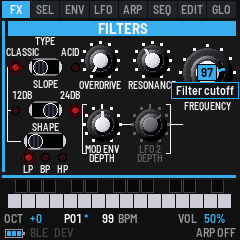
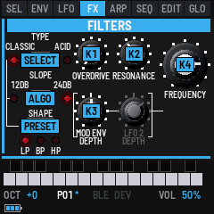
The keys light while their notes are held, whether you're playing them or they come in over MIDI. A note held below the keys' reach lights OCT-, one above lights OCT+.
3Playing
| Control | What it does |
|---|---|
| Keys | Play the voice, louder the harder they land. The last key pressed sounds, and the pitch glides to it if GLIDE is up. Each key also goes out as MIDI (see MIDI and audio). |
| OCT− · OCT+ | The octave, from −2 to +2. |
| SEL | MASTER, the patch page. On GLOBAL DUMP, the sound out as a SysEx dump instead; on the RND pages, their own (see RND Synth); on the SEQ page while the sequencer records, the step's legato (see SEQ). |
| MASTER | The volume. |
| REC | Recording on or off, from any page (see SEQ). On GLOBAL MIDI it finds a Bluetooth MIDI device instead. |
| Hold REC | Held for a second: a random sound (see below), on every page. |
| Hold ARP or SEQ | Held for a second: AFX mode on or off. A shorter press opens the page as usual. |
| Hold GLO | Held for a second: the RND pages, for Cyma Forma's RND Synth; held again, back to GLOBAL. See RND Synth. |
| PLAY | Plays the sequence at its own key (the arp on, in PLAY), or stops it. |
| SAVE | Saves the sound into its patch, and the settings. |
The keys sense how hard they're played, with no change to the FM-1. The 20 lowest keys (F3 to C5) give velocity and pressure; the top seven give velocity only. GLO SYS's VELOCITY sets how the keys answer: SOFT (louder for a light touch), NORMAL or HARD.
A random sound
Hold REC for a second: the oscillators' waves, oscillator 2's tuning, the sync, the pitches' and pulse widths' modulation, the widths, the filter (its type, frequency, resonance, overdrive and depths), the glide, the ring and the noise, both envelopes and both LFOs are set at random. The filter is kept a little open and the attack under a second, so the result is heard at once. The screen says SOUND RANDOMIZED, and for a second a card over the panel shows the randomizer at work: four knobs whirl and stop one by one, and the letters on its label tumble until they spell RANDOMIZE. Oscillator 1's tuning and the ranges, the mixer's other levels, the arp and the sequencer are left as they were. Hold REC again for another, or press SAVE to keep it.
AFX mode
Hold ARP or SEQ for a second to switch AFX mode on. The screen says AFX ON, and AFX stays lit at the bottom, left of VOL. Each key then plays the sound with its own changes: oscillator 1's wave, the filter's cutoff, the decay of both envelopes and the noise. For example, the lowest F is a dark, short sine, like a kick, and some keys add noise for snares and hi-hats. Each key keeps its changes in any octave, and MIDI notes in play the key they'd be on the keyboard. The patch itself doesn't change: switch AFX off (hold ARP or SEQ again) and the keys all play it as before. AFX is off each time the FM-1 starts.
4The sound
The signal goes: oscillators 1 and 2, the sub and noise → the mixer (or the ring modulator) → the filter, with its drive in front (oscillator 2 moving its cutoff with Osc Filter Mod) → distortion → the amp envelope (the VCA) → the limiter → MASTER. The mod envelope moves the pitches, the cutoff and the pulse widths; LFO 1 the pitches, LFO 2 the cutoff and the pulse widths, as on a Bass Station II. Everything on these pages belongs to the patch, and SAVE keeps it (but not the panels' switches that only pick what a knob sets: Osc Select, the pulse width's switch, the mixer's).
The envelopes' times are the Bass Station II's: the attack from at once (0) through about 250 ms (64) to 5.5 s (127), the decay through about 150 ms at the middle to 4.3 s, the release through about 360 ms at the middle to 10.5 s. A depth of ±63 on an envelope or an LFO moves the cutoff over its whole range, or the pitch by 12 semitones.
Like an analog synth, the engine is never quite still. These behaviours are always on and have no controls:
- Drift: each oscillator's pitch wanders slowly by a cent or two, separately from the other one. Even at FINE 0 the two oscillators beat gently against each other.
- Free-running oscillators: a new note doesn't restart the oscillators. Each attack begins somewhere different in the wave, so repeated notes vary a little, as they do on the Bass Station II.
- Supply sag: loud notes squash slightly, by about 1.5 dB at full velocity. Soft notes are unaffected.
- Envelope curves: attacks rise like a charging capacitor, fast at first and then easing into the top, so short attacks snap. Decays and releases fall the same way. The times on the knobs are unchanged.
- Mixer warmth: the oscillators, sub and noise are summed into a gentle, slightly lopsided saturation before the filter, even with DRIVE at 0. Loud peaks round off and stacked waves add a little grit and even harmonics.
- Filter tolerance and heat: like two analog units, every FM-1's cutoff sits slightly off the dial, by up to 1 %. A note held loud warms the filter over about half a minute, more with high resonance, and its cutoff drifts down by up to 2 %. It cools again over a minute or so once you stop.
OSCILLATORS (EDIT)
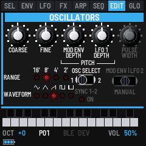
The Bass Station II's Oscillators section, with its five knobs, the Range and Waveform LEDs, Osc Select, Sync 1-2 and the pulse width's switch. The sub oscillator, beside them on a Bass Station II, is on SUB OSC + MIXER, EDIT's third page. The section has two views, EDIT and EDIT again: the pitch's and the pulse width's. Each shows the whole section, the controls the encoders don't set in that view dimmed.
Osc Select (SELECT, in both views) switches every knob, the Range and the Waveform between oscillator 1 and oscillator 2.
| Control | Setting |
|---|---|
| SELECT · OSC SELECT | Which oscillator the page sets, 1 or 2. It isn't saved with the patch. |
| ALGO · RANGE | The oscillator's footage: 16', 8' (the note played), 4' or 2', its LED lit. |
| PRESET · WAVE | Its wave: sine, triangle, saw, square or pulse, its LED lit. |
| K1 · COARSE | The tuning, −12 to +12 semitones. The sub oscillator follows oscillator 1's. |
| K2 · FINE | The fine tuning in cents, −100 to +100. A few cents apart, the two oscillators beat. |
| K3 · MOD ENV | The mod envelope's depth on the pitch, −63 to +63 (12 semitones at full). |
| K4 · LFO 1 | LFO 1's depth on the pitch, −63 to +63 (12 semitones at full). |
#### The pulse width's view (EDIT again)
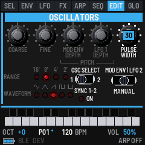
| Control | Setting |
|---|---|
| SELECT · OSC SELECT | Which oscillator, as on the pitch's view. |
| PRESET · SYNC | Sync 1-2: oscillator 2 hard-synced to oscillator 1, its LED lit. Sweep oscillator 2's Coarse or its Mod Env depth for the classic sync sound. |
| ALGO · PW SOURCE | The pulse width's switch, as on a Bass Station II: what the Pulse Width knob sets. Manual (the start) is the width, Mod Env the mod envelope's depth on it, LFO 2 LFO 2's. |
| K4 · PULSE WIDTH | Manual: the width, 5 to 95 %. Mod Env and LFO 2: their depth, −63 to +63 (±45 % at full). Each oscillator has its own three; the width counts when its wave is the pulse. |
SUB OSC + MIXER (EDIT a third time)
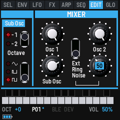
The page is laid out as that part of the Bass Station II's panel: the end of the oscillators' section, the Sub Osc with its octave and wave switches (a red LED at what each is set to), then the MIXER, its four knobs with the switch that picks what the fourth one sets. It starts right under the tabs, with no row for the page's name, so a knob shows its value in a cyan label on it while it turns.
| Control | Setting |
|---|---|
| SELECT · OCTAVE | The sub oscillator's octave, −1 or −2 below oscillator 1. |
| PRESET · SUBWAVE | The sub oscillator's wave: sine, narrow pulse or square. |
| ALGO · SUB | The sub's level, 0 to 127 (the mixer's Sub Osc knob). |
| K1 · OSC1 | Oscillator 1's level, 0 to 127. |
| K2 · OSC2 | Oscillator 2's level. |
| K3 · SOURCE | The mixer's switch: what K4 sets, Noise, Ring or Ext. It isn't saved with the patch, like the switch on a Bass Station II. |
| K4 · Noise, Ring or Ext | The level the switch picks: the noise or the ring modulator (both kept by the patch), or Ext: the computer's sound over USB, through the filter and the amp (see USB audio in section 9). Ext is saved with the patch. |
FILTERS (FX)
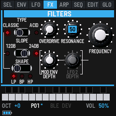
The Bass Station II's Filters section: the Type, Slope and Shape switches (Slope and Shape belong to the Classic filter: the line from Classic joins them), Overdrive and Resonance, the Mod Env and LFO 2 depths bracketed to the big Frequency knob. Two views: the filter's (FX) and LFO 2's on it (FX again). Key tracking, a setting on a Bass Station II, is on the group's mods (FX a fourth time).
| Control | Setting |
|---|---|
| SELECT · TYPE | Classic: a ladder filter, low, band or high pass. Acid: a diode ladder's low pass, thinner, with its bass kept under the resonance, like a 303; its Slope and Shape go dark. Back to Classic, it's as it was. |
| ALGO · SLOPE | The Classic filter's slope: 12 or 24 dB an octave. |
| PRESET · SHAPE | The Classic filter's shape: low pass (LP), band pass (BP) or high pass (HP). |
| K1 · OVERDRIVE | Drive into the filter, 0 to 127. |
| K2 · RESONANCE | 0 to 127. Near the top the filter sings on its own, a clean sine at the cutoff. |
| K3 · MOD ENV DEPTH | How far the mod envelope moves the cutoff, −63 to +63 (its whole range at full). |
| K4 · FREQUENCY | The cutoff, 0 to 127: about 40 Hz to 17.8 kHz. |
#### LFO 2's view (FX again)
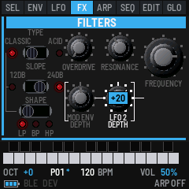
| Control | Setting |
|---|---|
| K4 · LFO 2 DEPTH | How far LFO 2 moves the cutoff, −63 to +63 (its whole range at full). |
The mods
What Bass Something 2 has that a Bass Station II's panel doesn't, a setting there (its Function and On-Key settings) or nothing at all, is on its own page: a plate screwed onto the panel, as a modification to a real one would be, brushed metal with Dymo-tape labels. Each group has its mods as its last page, a press of its button after the others. Its knobs end at K4: two are on K3 and K4, three on K2 to K4.
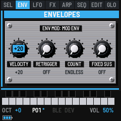
| Group | Page | Control | Setting |
|---|---|---|---|
| FX | FX MODS (fourth) | K3 · KEY TRACK | How far the cutoff follows the keys, 0 (not at all) to 7 (fully: an octave higher for each octave up). The cutoff is as set at C3. New patches start at 7, as on a Bass Station II. Patches saved before key tracking start at 0, so they sound as they did. |
| ENV | ENV MOD (third) | PRESET · ENV SELECT | Which envelope the plate sets (its title says): Amp Env, Mod Env, or Amp+Mod (both, the amp's shown). |
| ENV | K1 · VELOCITY | How much a key's velocity sets it, −63 to +63. The amp envelope's: the volume, at +63 a soft note quiet and a hard one loud, at 0 every note as loud, below 0 reversed. The mod envelope's: its depths (on the pitches, the cutoff and the pulse widths), at +63 a hard note opening the filter further. | |
| ENV | K2 · RETRIGGER | On: the envelope starts again from its attack when its decay ends, a loop while the key is held. | |
| ENV | K3 · COUNT | How many times it retriggers: ENDLESS, or 1 to 16, then it stays in its sustain. | |
| ENV | K4 · FIXED SUS | Fixed-duration sustain, for drums: no decay, the sustain held for the Decay fader's time, then the release, whether the key is held or not. It overrides the retriggering. | |
| LFO | LFO MOD (second) | PRESET · LFO | Which LFO the plate sets (its title says): LFO 1 or LFO 2. |
| LFO | K2 · KEYSYNC | On: a note played on its own starts the LFO from its wave's start, so every note begins the same. | |
| LFO | K3 · SPEED/SYNC | Speed: its knob sets its speed. Sync: its knob sets a sync value instead, the LFO following the tempo. | |
| LFO | K4 · SLEW | 0 to 127: its edges softened, a square gliding from one level to the next (at the top, over about 2 s). | |
| FX | K4 · LIMITER | 0 (off) to 127: the Bass Station II's VCA limiter. The output's level held to a threshold that comes down as it goes up (to 24 dB under full), so a loud, resonant sound is kept in check: more compressed, and quieter. |
New patches start with the amp's velocity at +63 and the mod's at 0, as the FM-1 always played. A Bass Station II patch brings its own.
The ARP group's mods (SEQ RETRIG and SWING) are with the arpeggiator, in section 5.
ENVELOPES (ENV)
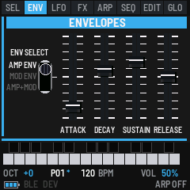
The Bass Station II's Envelopes section: Env Select and the four faders. Env Select picks which envelope the faders set, as on a Bass Station II: Amp Env, Mod Env, or Amp+Mod Env, where a fader sets both envelopes to the same place (and shows the amp's). It only picks what they set: the envelopes play as they are. It's on each of the section's pages (the triggering and the mods set the envelope it picks too), PRESET moving it; ENV leaves it as it is, going on to the section's other pages.
| Control | Setting |
|---|---|
| PRESET · ENV SELECT | Amp Env, Mod Env or Amp+Mod Env. |
| K1 to K4 | ATTACK, DECAY, SUSTAIN and RELEASE, 0 to 127. |
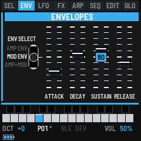
Each stage moves on from where the last one got to, so a quick retrigger or an early release doesn't click. The velocities, the retriggering and the fixed sustain are on the group's mods (ENV a third time). The mod envelope's depths are where a Bass Station II has them: on the pitches on the OSCILLATORS, on the pulse widths on their view, on the cutoff on the FILTERS.
#### TRIGGERING (ENV again)
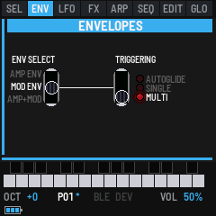
The Bass Station II's Triggering switch, for the envelope Env Select picks (each envelope has its own, kept with the patch; Amp+Mod sets both):
| Control | Setting |
|---|---|
| PRESET · ENV SELECT | Amp Env, Mod Env or Amp+Mod Env. |
| K4 · TRIGGER | Multi: every note starts the envelope again, legato or not. Single: a note played on its own starts it; a note played legato (another key still held) doesn't, the envelope going on. Autoglide: as Single, and the glide is on legato notes only, a note on its own going straight to its pitch (either envelope at Autoglide does this). With Multi and Single the glide is on every note. New patches start at Multi. |
The arp's and the sequencer's notes each start the envelopes as their own notes (the sequencer's legato steps don't).
PORTA and LFOS (LFO)
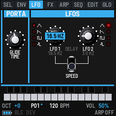
The Bass Station II's Porta and LFOs sections, side by side as on its panel. Each LFO has its wave button (four LEDs: triangle, falling saw, square, sample and hold; the lit one blinks with the LFO) and one knob, which the Delay/Speed switch sets: its speed or its delay. Under each knob is what it sets now.
| Control | Setting |
|---|---|
| PRESET · GLIDE TIME | PORTA's portamento: 0 jumps to each note; 1 to 127 glides, from 3 ms to 2.5 s. |
| ALGO · DELAY/SPEED | The switch: Speed (down) or Delay (up), for both knobs. It only picks what they set: both settings are kept. |
| K1 · WAVE 1 | LFO 1's wave: triangle, saw (falling, as the Bass Station II's), square or S&H (a new random level each cycle). |
| K2 · LFO 1 | At Speed, its speed, 0 to 255 as the Bass Station II's (about 0.2 Hz to 190 Hz: 3 Hz at 52, 7.9 Hz at 75; shown in Hz); with Speed/Sync at Sync (the mods), its sync value instead, a cycle from 64 beats (64b) to a 32nd-note triplet (32t), as the Bass Station II's display shows them. At Delay, its fade-in from a note, 0 (none) to 127. |
| K3 · LFO 2 | The same for LFO 2. |
| K4 · WAVE 2 | LFO 2's wave, the same. |
Synced, an LFO follows the tempo, or MIDI clock when it's followed (GLOBAL SYSTEM's SYNC). A note played on its own starts the delay's fade-in and, with keysync, the wave from its start; a note played legato doesn't. New patches start as the Bass Station II's INIT PATCH: LFO 1 at 75 (7.9 Hz), LFO 2 at 52 (3 Hz) with keysync.
As on a Bass Station II, where each LFO goes is fixed, and its depths are set where it goes: LFO 1 moves the oscillators' pitches (the OSCILLATORS' LFO 1 depth, one for each oscillator), LFO 2 the cutoff (the FILTERS' LFO 2 depth) and the pulse widths (the pulse width's switch at LFO 2).
Patches saved before this version had each LFO on a destination of its own. They're converted: an LFO 1 on the pitch is on both oscillators, one on oscillator 2 on that one, and an LFO 2 on the cutoff is on the filter. An LFO 1 on the cutoff, or an LFO 2 on the pitch, has no place on a Bass Station II and is set to 0. A sine LFO (Bass Station II LFOs have none) becomes a triangle.
EFFECTS (FX a third time)
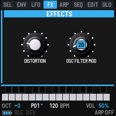
The Bass Station II's Effects section.
| Control | Setting |
|---|---|
| K3 · DISTORTION | 0 (none) to 127, made up so it stays about as loud. As on a Bass Station II it comes before the VCA, so its character doesn't change as the amp envelope fades. |
| K4 · OSC FILTER MOD | 0 (off) to 127: oscillator 2 moves the filter's frequency directly, at audio rate, up to 3 octaves either way at full. What it does depends on everything about oscillator 2 (its range, pitch, wave, pulse width and modulation) but not its level in the mixer: try it while sweeping oscillator 2's tuning. |
5The arpeggiator and the sequencer
As on the Bass Station II, the sequencer is part of the arpeggiator. The arp's MODE has the Bass Station II's eight positions: six arp modes, then PLAY and REC for the sequencer. Both play in the arp's RHYTHM, at its TEMPO and SWING, or to MIDI clock when it comes in (see GLO SYS's SYNC).
ARP
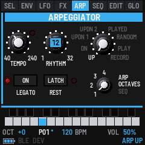
Press ARP to open its page. As on the Bass Station II's panel, the arp has its On and Latch buttons: turn PRESET up to switch it on (the LED beside ON lights, and so does ARP), down to switch it off. While it's on, the notes you hold are played one at a time over the octaves you set and in the rhythm you pick. It holds up to 16 notes, from the keys and from MIDI in.
| Control | Setting |
|---|---|
| PRESET · ON | The arp on (turn up) or off (turn down). While the sequencer records, it's LEGATO instead (see SEQ). |
| ALGO · LATCH | Turn up for on (the LED beside LATCH lights): the notes keep playing after you let go, until you play a new chord, which replaces them. With the arp off, LATCH is the Bass Station II's key hold: the last note you played keeps sounding until you play another. While the sequencer records, it's REST instead. |
| K1 · TEMPO | 40 to 240 BPM. While MIDI clock is followed (GLO SYS's SYNC), the knob shows the clock's tempo, labelled MIDI CLOCK (dashes until it's measured), and turning it changes nothing. The patch keeps its own tempo for when the clock stops. |
| K2 · RHYTHM | The Bass Station II's 32 arp rhythms. Each is two bars of 16ths with rests and held notes. Rhythm 1 is two bars of quarter notes, and 32 plays every 16th. |
| K3 · MODE (ARP MODE) | UP, DOWN, UP/DN (the top and bottom notes once each), UP/DN2 (twice each), PLAYED (in the order played), RANDOM, PLAY (the sequencer plays) or REC (the sequencer records), named around the knob as on the panel. |
| K4 · OCTAVES | A four-position switch, 1 to 4 octaves, its positions on its left as on the panel. In PLAY and REC it's SEQ instead: which of the four sequences, as on the Bass Station II's switch. |
Press ARP again for the group's mods, two Bass Station II settings that aren't on its panel, and once more to come back.
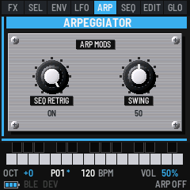
| Control | Setting |
|---|---|
| K3 · SEQ RETRIG | ON: the arp's notes, or the sequence, start again from the first every two bars, at the start of the rhythm. OFF: they run on across it. |
| K4 · SWING (ARP SWING) | 3 to 97 %. 50 is straight. Above it, the first 16th of each pair is longer and the second shorter. Below it, the reverse. |
SEQ
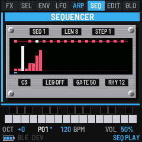
The sequencer plays a recorded sequence of up to 32 steps. Each step is a note or a rest, and a note can be legato. The steps have no length of their own: the arp's rhythm gives the timing. Each note in the rhythm plays the next step, its held 16ths hold the step on, and its rests are silent. The same sequence sounds different on every rhythm, and SWING swings it.
Four sequences are kept, as on the Bass Station II. OCTAVES picks one in PLAY and REC (SEQ on this page does the same). Each patch also holds a copy of the one it was saved with, so a patch brings its sequence back with it.
Playing it: with the arp on and in PLAY, hold a key. The sequence plays transposed from its first note, so the key of that note plays it as it was recorded and each key above or below moves it by that many semitones. With LATCH it plays on after you let go, and a new key transposes it. PLAY does this in one press: it switches the arp on in PLAY and plays the sequence at its own key, and PLAY again stops it (and switches the arp off). A key pressed while it plays transposes it.
The length and the rhythm: a sequence is as long as the number of steps recorded, and a rhythm is 8 to 32 notes long, so they often differ. With SEQ RETRIG ON, the sequence starts again from its first step every two bars, even if it hasn't finished. With SEQ RETRIG OFF, it plays all the way through and wraps around the rhythm. An 8-step sequence on a 16-note rhythm plays twice in the two bars. That's how a short sequence fills a longer pattern, as on the Bass Station II: the sequencer has no empty steps to fill.
Recording: press REC on any page, or SEQ again on the SEQ page (MODE goes to REC, and SEQ and REC light). The bottom line's SEQ REC counts the steps recorded so far (SEQ REC 0/32 until the first note). The first note you play starts a new sequence from step 1. Each key, or each note from MIDI in, is the next step, and the screen shows it (STEP 3 G3). The keys play the voice as you go.
| Button | While recording |
|---|---|
| FX on the SEQ page, or ALGO turned up on the ARP page | A rest (the Bass Station II's REST). |
| SEL on the SEQ page, or PRESET turned up on the ARP page | Makes the step just recorded legato (the Bass Station II's LEGATO). That note is held into the next one, which plays without a new attack. The same note on both sides makes a tie: one note held over both steps. Again cancels it. A rest can't be tied. |
Recording stops at 32 steps (SEQ FULL). Press REC, or SEQ on the SEQ page, again to stop: MODE goes to PLAY. Leaving REC before playing a note keeps the sequence as it was.
| Control | Setting |
|---|---|
| PRESET · SEQ (SEQUENCE) | Which of the four sequences: turning it loads that one into the patch. |
| SELECT · LENGTH (SEQ LENGTH) | The steps that play, 0 to 32. Lengthen it and the steps after the old length come back as they were last recorded (rests on a new sequence). |
| ALGO · STEP | The cursor: which step K1 and K2 edit (white in the picture). |
| K1 · NOTE | The step's note, from REST up through the notes. |
| K2 · LEGATO | The step's legato, ON or OFF. |
| K3 · GATE | How long each note sounds, 5 to 100 % of its 16th (an FM-1 extra; the arp's notes too). |
| K4 · RHYTHM | The arp's rhythm, the same as ARP's K2: the sequence plays in it. (TEMPO is on the ARP page.) |
The plate's display shows the rhythm as a row of lights over the 32 steps: a lit light is a 16th that plays a note. Under it each step is a bar, its height the note's pitch, a legato note joined to the next. A mark under the bars shows the step playing, and the cursor's step is white. Steps past the length are dark.
The sequences are kept by themselves: two seconds after you last change one, once the FM-1 is quiet, the four sequences and the patch's copy are written to memory (with which of the four it plays, the gate, the tempo and the swing), so they're still there after power-off without SAVE. Turning PRESET to another patch keeps them first. The rest of the sound still needs SAVE.
Writing to the FM-1's memory stops the sound for a moment, so it waits for silence: the sequencer stopped, the arp with no notes, no key held and the last note faded out, for half a second. Change TEMPO while the sequence plays and it's kept when you stop it. Switch off while it's still playing and those changes are lost: stop first. SAVE and turning PRESET write at once, so pressing SAVE mid-performance gives a short gap.
6Patches and saving
Bass Something 2 holds 32 patches, P01 to P32. Each patch is a complete sound: the settings of every control described in section 4, plus the arp and the sequence.
A new Bass Something 2 starts with 32 factory patches of its own, each with the default sequence. P01 to P10 are basses, P11 to P20 leads, and P21 to P32 show off the rest of the voice:
| Patch | Name | What it shows |
|---|---|---|
| P01 | SUB ZERO | a sine an octave down with the sine sub under it: felt more than heard |
| P02 | STATION BASS | the classic: two saws at 16', the square sub, a short filter envelope |
| P03 | ACID SLIDE | the Acid filter with high resonance; overlap the notes to slide |
| P04 | RUBBER PLUCK | a narrow pulse through the 12 dB filter, short and round |
| P05 | REESE TUNNEL | two detuned saws beating, the cutoff breathing slowly |
| P06 | FM GROWL | Osc Filter Mod: oscillator 2 moving the cutoff at audio rate |
| P07 | WOBBLE DUB | LFO 2 on the cutoff, synced to eighths of the tempo |
| P08 | SYNC PUNCH | hard sync, the mod envelope sweeping oscillator 2 down |
| P09 | GRIT BASS | squares and the sub through the drive and the distortion |
| P10 | BOOM 808 | a sine that drops into its note with a long decay: a tuned kick |
| P11 | BRIGHT SAWS | two open saws, glide on legato notes, delayed vibrato |
| P12 | SQUARE SOLO | a square with another an octave up, hollow and woody |
| P13 | SYNC SCREAMER | hard sync with the mod envelope on oscillator 2's pitch |
| P14 | PWM LEAD | two pulses, their widths swept by LFO 2 in opposite directions |
| P15 | ACID SCREAM | the Acid filter high and near self-oscillation, driven |
| P16 | FIFTH ELEMENT | oscillator 2 a fifth up: a power chord from each note |
| P17 | RING LEAD | ring modulation for a metallic edge |
| P18 | PORTA SINE | a soft sine and triangle that always glide, slowly |
| P19 | HOT WIRE | a saw and a pulse pushed hard through drive and distortion |
| P20 | BREATHY FLUTE | a triangle with noise, a slow attack and delayed vibrato |
| P21 | ARP PLUCKS | the arpeggiator up two octaves in rhythm 8: hold a chord |
| P22 | ARP RANDOMIZER | random notes over three octaves, latched, sample and hold on the cutoff |
| P23 | S&H COMPUTER | sample and hold on a resonant filter: 70s computer bleeps |
| P24 | SLOW SWEEP PAD | detuned saws, slow attack and release, the cutoff swept slowly |
| P25 | LASER ZAP | the mod envelope drops the pitch an octave into the note |
| P26 | RING BELLS | two oscillators ring-modulated a fifth apart, decaying like a bell |
| P27 | WINDY NOISE | noise through a resonant band pass that drifts: hold a key |
| P28 | STUTTER GATE | the envelopes retriggering: each note chopped |
| P29 | FM METAL | Osc Filter Mod at full with an odd interval: metallic clangs |
| P30 | HIGHPASS PLUCK | the high pass filter thinning a plucked saw |
| P31 | SIREN SWEEP | LFO 1 on both oscillators' pitches: a siren on every key |
| P32 | TALKING WAH | the band pass opening and closing on each note |
Updating the firmware keeps the patches you have. To get the factory ones back, send the factory bank, bs2/presets/factory.syx in the source (see SysEx).
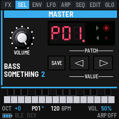
The HOME page (HOME) is the page Bass Something 2 starts on: the name, the patch in large red digits, a scope that draws the synth's wave as it plays (two of its periods, standing still while a note is held, scaled so a quiet sound shows as large as a loud one; a flat line in silence), and under them a Bass Station II's whole front panel, drawn to the scale of the keys at the foot of the screen (they stand for its keys and its wheels together). Every knob, fader, switch and LED on it shows the sound as it is set, and follows it as you change it on the other pages. PRESET picks the patch here, as on MASTER.
The MASTER page (SEL) is the Bass Station II's Master section: the Volume (the FM-1's MASTER knob, as it's set), the display with the patch in red, its dot lit while there are changes not saved, the Org. Value arrows, the Save button and the Patch buttons.
The Org. Value arrows, right of the display, work as the Bass Station II's: after you change a control of the sound (a knob, or a control change from MIDI), the LED beside one arrow lights to show which way to turn that control to get back to the value saved in the patch. Neither lights when it's there, after SAVE, or after a patch change. They follow the control changed last, on whichever page. The display shows that control's value (0 to 127, or -63 to 63) for a moment and a half after the change, then the patch number again.
| Control | What it does |
|---|---|
| PRESET | The Patch buttons: picks a patch, P01 to P32, and plays it at once; the button the way you turned lights. Changes you haven't saved to the patch you leave are lost. An arp or a sequence that is playing keeps playing, in the new sound. |
| SAVE | Stores the sound into the patch shown. |
SAVE works on every page but RND SEED (where it keeps the RND Synth's patch). It stores the sound into its patch and keeps the settings: the octave and the patch you're on (the FM-1 starts on it next time). While something isn't saved, SAVE is lit and the patch shows * at the bottom of the screen (P01*). The screen says SAVED and the patch's number when it's done.
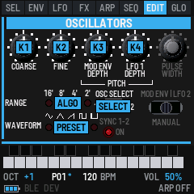
Kept without SAVE, two seconds after a change once the FM-1 is quiet: the four sequences and the patch's (see SEQ), and every GLO setting (see Global settings). Not saved: AFX mode (off at each start) and whether the sequencer is playing.
7SysEx: a Bass Station II editor
Bass Something 2 reads and writes Novation Bass Station II patch dumps, so a Bass Station II editor or librarian can store its sounds, and Bass Station II patches (.syx files) can play on the FM-1. SysEx goes over the USB cable only.
The website's SysEx page does all of this from Chrome or Edge, with no other software: it gets the sound or all 32 patches and saves them as a .syx file, and sends .syx files to the FM-1 with the pause between messages set for you.
From the FM-1 to an editor:
- On GLOBAL DUMP (GLO four times), press SEL: the sound goes out as one dump, named Bass Smth 2 and its number (Bass Smth 2 01: a patch name holds 16 characters). The screen says SYSEX SENT.
- On GLOBAL DUMP (GLO four times), press FX: all 32 patches go out as a bank, Bass Smth 2 01 to Bass Smth 2 32, each addressed to its own patch number (0 to 31), as a Bass Station II bank file is. Record them into one
.syxfile and it's a backup: sent back, each patch returns to its own slot. The patch you're on goes as it sounds now, with changes not yet saved. - A computer can ask for the sound: SysEx
F0 7D 42 53 32 01 F7sends the same dump as SEL on GLOBAL DUMP.F0 7D 42 53 32 03 F7sends the whole bank, as FX on GLOBAL DUMP.F0 7D 42 53 32 02 F7sends the RND SEED slot's patch to the RND Synth instead (see RND Synth).
From an editor to the FM-1: choose the FM-1 as the editor's MIDI output and send the patch (in an editor, it's usually called Send or Send to synth). Any Bass Station II patch dump works, with a name (firmware 2.5 and later) or without one. A dump sent as the current sound loads into the sound you're playing now, and the screen says SYSEX LOADED and the patch's name. Press SAVE to keep it in the patch you're on. To keep it in another patch, pick that patch on the MASTER page first.
A whole bank: a Bass Station II bank file (a .syx of up to 128 patches, each addressed to its patch number, as sound packs and librarians save them) loads straight into the FM-1's patches: patch 0 into P01, 1 into P02 and on to 31 into P32. The FM-1 has 32 patches, so the rest of a 128-patch bank is left out. The screen says BANK IN and the first one's name, and a second after the last one it saves the bank and says BANK LOADED and how many came in (32 IN, 96 LEFT for a whole Bass Station II bank). This replaces the patches it reaches, without SAVE: send GLOBAL DUMP's bank to the computer first if you want to keep them. Each patch keeps its own sequence, tempo and gate.
From v0.3 the file can go as fast as the computer sends it: the FM-1 queues the messages and holds the computer back while it catches up, so none is lost. Firmware before v0.3 took one SysEx message at a time and dropped one that came while it was still busy with the last: with it, send with a pause between messages (20 ms is enough in testing; 50 ms leaves room; most librarians, SysEx Librarian on macOS among them, have a setting for it). If BANK LOADED counts fewer than were sent, send it again with a longer pause.
A dump carries what the two synths share, including both oscillators' tuning, the mod envelope's pulse width depths, the two velocities, the envelopes' triggering and retriggering, and the filter's key tracking (firmware 2.5's; a dump from before it tracks fully, as those Bass Station IIs did). It carries the LFOs' speed (all 8 bits), delay, slew, keysync and sync too, and Osc Filter Mod. It doesn't carry what the FM-1 lacks (paraphonic mode, the oscillator error), or what nobody has yet found the place of in a dump: the envelopes' retrigger count and fixed sustain (later firmware's), the VCA limiter and the external input's level. Those come in as a Bass Station II's initial patch has them. The arp's mode (PLAY and REC too), octaves, rhythm and swing come and go with it. The FM-1's own extras (the sequence, the tempo, the gate) stay as they were when one comes in. Settings the FM-1 doesn't have go out as a Bass Station II's initial patch has them. Values beyond what an FM-1 control can reach are brought to its nearest.
8RND Synth
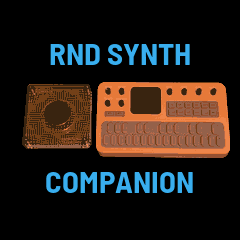
For owners of Cyma Forma's RND Synth (firmware 1.4 or later), Bass Something 2 is its companion and its remote. It keeps 32 of the RND Synth's patches and sends one back when you want it again, it sets what the RND Synth holds across new patches (its type, key and tracks), and it mixes the RND Synth's four tracks. None of this changes Bass Something 2's own sound; a new patch's tempo does become the FM-1's (see Tempo below).
Connecting: plug the RND Synth and the FM-1 into a computer by USB, and pass MIDI between them both ways (a DAW, or a MIDI router that passes SysEx). From the RND Synth to the FM-1: its SysEx and its notes. From the FM-1 to the RND Synth: its SysEx, and its channel messages (a root is set with a note on channel 1, a scale with CC 9 on channel 1, the tracks' levels and reverb with CCs on channels 2 to 5). If the FM-1's keys also go to the RND Synth, set GLOBAL MIDI's CHANNEL to something other than 1, or every key you play sets the RND Synth's root.
Clock: the RND Synth never sends MIDI clock. It follows the FM-1's (GLOBAL SYSTEM's SEND CLK on), or a master clock that drives both.
Hold GLO for a second for the RND pages, then press GLO for the next one: RND SEED, RND PATCH, RND TRACKS, then RND SEED again. Hold GLO for a second again to go back to GLOBAL. They use the whole screen under the tabs, in larger print, so the keys' strip and the status line (octave, patch, volume) are hidden while they're open. They're kept off GLO's own pages, as only RND Synth owners need them. Opening them asks the RND Synth how it is (its firmware, its patch, its locks, its tracks), and each page shows it. As they open, a splash fills the screen for a moment: RND SYNTH, the RND Synth beside the FM-1, then COMPANION, in cyan. Any button or knob skips it.
At the right of each page's own bar is the seed the RND Synth is playing (PLAYING F34E8559; NOT HEARD YET until it has answered).
RND SEED: the patches you keep
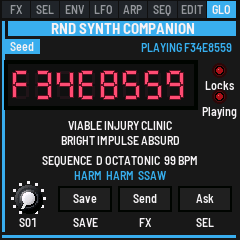
An RND Synth patch is its seed (a number, shown as eight digits, F34E8559, that it makes its music from) and its locks (what it held when it rolled the patch). On RND firmware 1.4 the locks are part of the patch: the same seed with other locks is another patch. Bass Something 2 keeps both, in 32 slots, S01 to S32, through power-off. They're a table of their own, separate from the 32 patches, so saving a patch or loading a Bass Station II dump doesn't touch them.
The display shows the slot's seed (dashes: the slot is empty). Beside it, Locks lights when the slot's patch holds locks, and Playing when it's the patch the RND Synth is playing now. Under it are the patch's names, the words RND pixels (Cyma Forma's web app) gives it: three for the seed, then up to three for its locks (VIABLE INJURY CLINIC CODE INCH ABSURD). Type them into RND pixels to load the same patch there. Under the words: when it's the patch playing, what the RND Synth says it is (SEQUENCE D OCTATONIC 99 BPM, then each track's engine, in cyan); otherwise what the slot locks (ANY TYPE ANY ROOT ANY SCALE, then the engines held, - for none).
| Control | What it does |
|---|---|
| PRESET · SEED | Picks a slot, S01 to S32. The screen says the slot and its seed (LOCKED: with locks), or EMPTY. |
| SAVE | Keeps the patch the RND Synth is playing, seed and locks, in the slot. The screen says SEED SAVED, the slot and the seed. On this page SAVE doesn't store the FM-1's patch. |
| FX | Sends the slot's patch to the RND Synth: every lock let go, the slot's locks set, then its seed, a step every few milliseconds. The RND Synth plays exactly the patch you kept. The screen says RND SEED SENT. |
| SEL | Asks the RND Synth how it is again, for when it was changed elsewhere (in RND pixels, say). |
Capturing: each time the RND Synth makes a new patch, the FM-1 says RND SEED IN, the seed and its tempo (RND SEED IN 1A2B3C4D 132 BPM), and shows it at the top right. Turn PRESET to a slot and press SAVE to keep it.
Tempo: a new patch comes with the RND Synth's tempo for it, and the FM-1 takes it as its TEMPO (40 to 240 BPM). The arp, the sequencer and SEND CLK's clock follow at once, so when the RND Synth changes direction, the FM-1 moves with it. If the RND Synth changes its tempo without a new patch, the FM-1 follows that too (RND TEMPO 147 BPM). Between them TEMPO is yours to turn. Like any TEMPO change it's kept with the sequence after two seconds, once the FM-1 is quiet (see SEQ).
RND PATCH: the locks
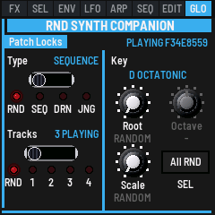
What the RND Synth holds across new patches. Each setting is RND (the RND Synth picks) or a lock. Locks are kept by the RND Synth, through its button and through power-off. By each group's name, in cyan, is what the RND Synth is playing now (SEQUENCE, 3 PLAYING, D OCTATONIC).
| Control | What it locks |
|---|---|
| SELECT · TYPE | RND, SEQ (sequence), DRN (drone) or JNG (jingles). The RND Synth plays the patch again in the new type at once. |
| ALGO · TRACKS | RND, or 1 to 4 tracks. At once, too. |
| K2 · ROOT | RND, or C to B: the key's tonic, from the next patch. |
| K3 · OCTAVE | The root's octave, −3 to +3. Only with a root locked. |
| K4 · SCALE | RND, or one of 20 scales (Major, Natural Minor, Harmonic Minor, Blues, the pentatonics, the modes, Whole Tone, Double Harmonic, Hungarian Minor, Phrygian Dominant, Hirajoshi, In Sen, Prometheus, Octatonic, Persian), from the next patch. |
| SEL · ALL RND | Lets every lock go, the engines' too. |
Locks change the patch's id: a patch kept after you lock something keeps those locks.
RND TRACKS: the mixer
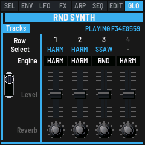
The RND Synth's four tracks, a strip each (K1 to K4), as Env Select picks the ENVELOPES' faders: Row Select (PRESET) picks what K1 to K4 set, and the other rows dim. Each strip shows the track's number and the engine it plays (in cyan; dim when the track isn't playing).
| Row | K1 to K4 set |
|---|---|
| Engine | The engine held on that track: RND, or SUBTR (subtractive), FM, ACID (303), NOISE, SPEECH, PLUCK (plucked string), SSAW (supersaw), HARM (harmonic). On a playing track it changes at once, and the patch is then "off-seed": no seed brings it back exactly. |
| Level | The track's level: the middle is the patch's own (0.0 DB), the top +6 dB, the bottom off. Said in dB. |
| Reverb | The track's reverb send: the middle is the patch's own, the bottom dry, the top as wet as the RND Synth goes. Said in dB. |
Levels and sends go back to the middle with every new patch, as on the RND Synth.
Playing its tracks
The RND Synth plays its tracks on MIDI channels 1 to 4. Set GLOBAL MIDI's CHANNEL (K1) to one of them, and the FM-1 plays that track's notes with its own sound. On ALL, the four tracks share the FM-1's one voice, each new note cutting off the last.
Its messages
The RND Synth's SysEx is F0 6F 62 78 then a message number: 10 and five 7-bit parts, lowest first, is the seed. A computer can send it the same way, or have the FM-1 send the RND SEED slot's patch with F0 7D 42 53 32 02 F7.
9MIDI and audio
MIDI comes in over USB, Bluetooth and the TRS jack. A note on GLO's channel plays the voice (or the arp, or transposes the sequencer). MIDI clock and start drive the arp and the sequencer (see SYNC). Control changes on GLO's CC CHAN turn the sound's knobs (see Control changes below). Other messages, such as pitch bend, are shown on the bottom line but change nothing.
The keys go out over USB and Bluetooth: their notes with velocity, and their pressure as poly aftertouch.
Global settings (GLO)
GLO opens the global settings; press it again for the next page. They belong to the FM-1, not to a patch, and they save themselves: two seconds after you change one, once the FM-1 is quiet (see SEQ), it's kept through power-off, without SAVE (so a GLO change never writes over your patch), and SAVE doesn't light for them. Each page is a GLOBAL panel with its own bar (MIDI, System, Display, SysEx Dump) and a red display: GLOBAL MIDI's shows the MIDI channel (ALL, OFF or the number), GLOBAL SYSTEM's the tempo (while MIDI clock leads, its tempo as measured over every two beats; dashes until then), with the knobs' response, the clock's state and the firmware's version (VERSION v0.6) beside it, GLOBAL DUMP's the patch. The on/off settings are slide switches.
On every GLO page, the right of the page's own bar shows the audio's load (for a moment after a change, what changed instead), for example CPU 34/41. The first number is the load now, as a percentage of the time the FM-1 has to make each block of sound. The second is the highest it reached in the last five seconds. If the sound ever misses its deadline (a dropout, heard as a click), a count follows in cyan, for example CPU 97/100 !2, and stays until the FM-1 is switched off. A click without the count going up came from something else. Every write to memory (SAVE, a patch change, and the sequence and GLO settings keeping themselves) also adds one, because the write holds up the sound for a moment. When those happen in silence, nothing is heard.
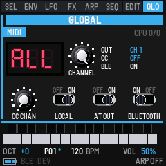
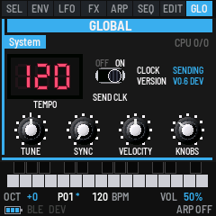
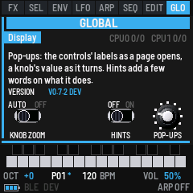
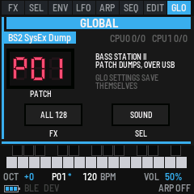
Holding GLO for a second opens the RND pages, for the RND Synth: see RND Synth.
| Page | Control | Setting |
|---|---|---|
| MIDI | PRESET CC CHAN (CC CHANNEL) | OFF, 1 to 16 (1 is the default), or ALL. Control changes on that channel turn the sound's knobs (see Control changes). It is separate from CHANNEL, so a controller can use its own channel without playing notes. |
| MIDI | K1 CHANNEL | OFF, 1 to 16 (1 is the default), or ALL. In: notes on that channel play (ALL: any channel; OFF: none). Out: the keys' notes on it (ALL: channel 1; OFF: none). |
| MIDI | K2 LOCAL (LOCAL CONTROL) | ON (the default): the keys play the voice. OFF: they only send MIDI, for a computer that plays it back. The sequencer, the arp from MIDI notes, and MIDI in still play. |
| MIDI | K3 AT OUT (AFTER TOUCH OUT) | The keys' pressure out as poly aftertouch: ON (the default) or OFF. |
| MIDI | K4 BLUETOOTH (BLUETOOTH MIDI) | Bluetooth on (the default) or off, at once. |
| MIDI | REC | Finds and connects a Bluetooth MIDI device (below). Held a second, a random sound, as on every page. |
| SYS | PRESET SEND CLK (SEND MIDI CLOCK) | ON (the default): MIDI clock goes out at the tempo, and PLAY sends start and stop. Not while following MIDI clock. |
| SYS | K1 TUNE | The master tune, −50 to +50 cents (0 is the default). |
| SYS | K2 SYNC (CLOCK SYNC) | What the arp and the sequencer follow. AUTO (the default): MIDI clock while it comes in, else the tempo. INT: the tempo only. EXT: MIDI clock only (without it they wait). While following, a MIDI start begins again from the first step. |
| SYS | K3 VELOCITY | The keys' velocity curve: SOFT (louder for a light touch), NORMAL (the default) or HARD. |
| SYS | K4 KNOBS (KNOB RESPONSE) | How far the knobs go as you turn them faster. FINE: always one step a click. NORMAL (the default): up to 8 steps a click on a quick spin. FAST: up to 12, and sooner. COARSE: two steps a click even turned slowly, up to 16. Only the knobs with a wide range (levels, Frequency, Tune, Tempo, the LFOs' speeds and so on); switches and short lists always move one position a click. |
| DISPLAY | PRESET KNOB ZOOM | AUTO (the default): as you turn an encoder, the panel zooms in on its control (twice the size) and back out a second after you stop; on HOME, a MIDI CC dives in, one camera move: the small panel zooms in on the control's section until it fills the screen, becomes that section's own page and zooms on in to the control, stays while the CCs come, then pulls the same way back out to HOME (a turn of your own while that page is up keeps you there). OFF: no zoom. |
| DISPLAY | K3 HINTS | ON (the default): as you turn a knob, a few words on what it does show under its value; as you press a button, over the keys (a section's button: the page its next tap opens). OFF: none. See The screen. |
| DISPLAY | K4 POP-UPS (POP-UP TIME) | How long the pop-ups stay: the controls' labels as a page opens, a knob's value after you turn it, and the hints. OFF: no labels or button hints, and a value only while the knob turns. 1.5 S (the default), 2 S or 3 S. ALWAYS: until you turn another knob or open another page. |
| DUMP | SEL (Sound) | Sends the sound as one Bass Station II patch dump (SysEx). See SysEx. |
| DUMP | FX (All 32) | Sends all 32 patches as a Bass Station II bank (SysEx), which loads back into the same patches. See SysEx. |
| RND (GLO held) | The RND Synth's patches, locks and tracks. See RND Synth. |
Control changes
With CC CHAN set, a controller or a Bass Station II editor can turn the sound's knobs over MIDI. The FM-1 uses the Bass Station II's own CC numbers. Control changes on any other channel, and numbers not in the table, are ignored. A change marks the patch as edited (SAVE lights up), and it shows on the screen but isn't spoken.
Each value is spread across the knob's range. A knob that goes both ways (such as FINE or an envelope depth) is at zero at 64. A switch is on at any value above 0. The ranges (16' to 2') take 63 to 66, like a Bass Station II. Other choices take their number from 0: for example, SUBWAVE takes 0 for SINE, 1 for PULSE and 2 for SQUARE. Where the Bass Station II uses two CCs for one knob (cutoff 16 and 48, for example), the FM-1 reads the first.
| CC | Page | Knob |
|---|---|---|
| 5 | PORTA | GLIDE TIME |
| 16 | FILTERS | FREQUENCY |
| 18 | LFOS | LFO 1 speed |
| 19 | LFOS | LFO 2 speed |
| 20 | SUB OSC + MIXER | OSC1 level |
| 21 | SUB OSC + MIXER | OSC2 level |
| 22 | SUB OSC + MIXER | SUB level |
| 23 | SUB OSC + MIXER | NOISE level |
| 24 | SUB OSC + MIXER | RING level |
| 26 | OSCILLATORS (Osc 1) | FINE |
| 27 | OSCILLATORS (Osc 1) | COARSE |
| 29 | OSCILLATORS (Osc 2) | FINE |
| 30 | OSCILLATORS (Osc 2) | COARSE |
| 70 | OSCILLATORS (Osc 1) | RANGE |
| 71 | OSCILLATORS (Osc 1) | MOD ENV depth |
| 72 | PULSE WIDTH (Osc 1) | Mod Env |
| 73 | PULSE WIDTH (Osc 1) | LFO 2 |
| 74 | PULSE WIDTH (Osc 1) | Manual |
| 75 | OSCILLATORS (Osc 2) | RANGE |
| 76 | OSCILLATORS (Osc 2) | MOD ENV depth |
| 77 | PULSE WIDTH (Osc 2) | Mod Env |
| 78 | PULSE WIDTH (Osc 2) | LFO 2 |
| 79 | PULSE WIDTH (Osc 2) | Manual |
| 80 | SUB OSC + MIXER | SUBWAVE |
| 82 | FILTERS | RESONANCE |
| 85 | FILTERS | MOD ENV depth |
| 86 | LFOS | LFO 1 delay |
| 87 | LFOS | LFO 2 delay |
| 88 | LFOS | LFO 1 wave |
| 89 | LFOS | LFO 2 wave |
| 90 to 93 | ENVELOPES (Amp Env) | ATTACK, DECAY, SUSTAIN, RELEASE |
| 94 | EFFECTS | DISTORTION |
| 102 to 105 | ENVELOPES (Mod Env) | ATTACK, DECAY, SUSTAIN, RELEASE |
| 108 | ARP | on or off |
| 109 | ARP | LATCH |
| 110 | OSCILLATORS (the pulse width's view) | SYNC 1-2 |
| 111 | ARP | OCTAVES, K4 (SEQ in PLAY and REC) |
| 112 | ENV MOD (Amp Env) | VELOCITY |
| 113 | ENV MOD (Mod Env) | VELOCITY |
| 114 | FILTERS | OVERDRIVE |
| 115 | EFFECTS | OSC FILTER MOD |
| 116 | ARP MODS | SWING |
| 118 | ARP | MODE, K3 (6 PLAY, 7 REC, as the Bass Station II sends them) |
| 119 | ARP | RHYTHM, K2 |
The RND Synth: its notes come in on channels 1 to 4. Keep CC CHAN on another channel, or OFF, and its messages can't change the sound.
Bluetooth
Bass Something 2 advertises over Bluetooth as "FM-1" and four characters of its own, such as "FM-1 1F2D", so two FM-1s can be told apart. On a Mac, open Audio MIDI Setup, choose Window > Show MIDI Studio, click the Bluetooth button, then Connect next to the FM-1. On an iPad or iPhone, connect from a music app's Bluetooth MIDI settings. BLE at the bottom of the screen lights while connected.
To switch Bluetooth off, press GLO for GLOBAL MIDI and turn K4 (BLUETOOTH) to OFF: the FM-1 stops advertising and drops any connection. Turn it back to ON to switch it on again. It is kept for the next start.
To connect to a Bluetooth MIDI device, such as a keyboard or a controller, put the device in its pairing or advertising mode, then press GLO for GLOBAL MIDI and press REC: the screen says BLE SCANNING. Turn ALGO to pick the device by its name, and press REC again to connect. DEV at the bottom lights while it's connected, and the bottom line shows the last message it sent. Press REC once more (on GLOBAL MIDI) to disconnect.
USB audio
Over the USB cable the FM-1 is also a sound card. A computer can record what it plays (an input named "Bass Something 2 FM-1"), and can play through it: choose "Bass Something 2 FM-1" as the output, and its sound comes out of the FM-1's speaker and headphones, mixed with the FM-1's own, at MASTER's volume.
That output is also the FM-1's Ext input, as the Bass Station II's Ext In socket is: turn the mixer's Ext up (SUB OSC + MIXER, K3 to Ext, then K4) and the computer's sound goes through the synth instead, into the mixer with the oscillators, then the filter, the amp envelope and the distortion. Like the Bass Station II's, you hear it only while a note plays (the amp envelope opens it), so hold a key, use LATCH, or let the arp or the sequencer play the envelope. Its two sides are mixed into one, as the synth is mono. With Ext at 0 the computer's sound plays straight through, as above.
10The screen reader
Bass Something 2 tells a screen reader what's on its screen, through the FM-1 Screen Reader: the page, the patch and the settings when the reader starts listening, then each change as it happens (a knob's whole name and value, SAVED, SYSEX LOADED). The emulator does the same, with your own screen reader or with its built-in voice.
11Troubleshooting
No sound: turn MASTER up. Check the mixer's levels on SUB OSC + MIXER (EDIT three times) and the Frequency on the FILTERS (FX); a random sound can be quiet. On GLOBAL MIDI, LOCAL must be ON for the keys to play.
A key plays the wrong sound, a different one on each key: AFX mode is on (AFX at the bottom, left of VOL). Hold ARP or SEQ for a second to turn it off.
A note keeps sounding (stuck): another device sent its note-on but its note-off never arrived. The note's key is lit: press it and let go, and the note stops. If OCT- or OCT+ is lit instead, the note is out of the keys' reach: press the lit OCT button. Changing the octave lets every held note go.
The arp or the sequencer doesn't move: on GLOBAL MIDI, ARP CLOCK is EXT and no MIDI clock is coming in. Set it to AUTO.
My change is gone: picking another patch on the MASTER page drops what wasn't saved. Press SAVE before you move.
An editor doesn't receive or send dumps: SysEx goes over USB only. Choose the FM-1 as the editor's MIDI input to receive and as its MIDI output to send.
The installer doesn't find the FM-1: use Chrome or Edge, allow MIDI when asked, and close other programs that use the FM-1's MIDI port. If it still isn't found, the installer lists the computer's other MIDI ports to try: a Mac can show the FM-1 under another name.
The FM-1 doesn't start after an install: after two failed starts it waits in the chip's update mode. Put the stock firmware back, then install again. For details, see felucca-bsp's tools/fm1_rescue.sh.
12Credits
Bass Something 2 is by John Brown (@imijes), under MPL-2.0. It's built on the work of others:
- Charles Vestal (@charlesvestal): fm1-base, the template and platform this firmware is built on, and the platform layer of the FM-1 firmwares it comes from.
- Leo Kuroshita (@kurogedelic, Hügelton Instruments): Felucca, the firmware fm1-base grew from, and felucca-bsp, which it runs on. Used under MPL-2.0 with his permission.
- keremimo (@keremimo): MIDI clock and transport sync in felucca-bsp.
- Chris Farrell (@seajaysec): from fm-static, the web installer's finding of an FM-1 under any port name, and its package and update checks. Used under MPL-2.0 with his permission.
- BS2-Web by François Georgy (francoisgeorgy/BS2-Web): where each setting sits in a Bass Station II patch dump, which the SysEx import and export follow.
- Tronstoner: the chart of the Bass Station II's arp rhythms (2013, CC BY-SA), the source for rhythms 31 and 32.
- Quixotic7 (@Quixotic7): RemoteFM1 for iOS and its
.rfm1format, which runs this firmware on an iPhone or iPad. - Groove OS by Peter Gombos: the idea of running FM-1 firmware in the browser (no code from it).
- RND pixels by Cyma Forma (pixels.cymaforma.com): how an RND Synth patch is named (its seed and lock code, and their words), and the RND Synth's SysEx, which the RND pages follow.
- BIP39's English word list (MIT licence, bitcoin/bips): the words RND SEED names patches with.
- Fonts: Barlow by The Barlow Project Authors and Terminus by Dimitar Toshkov Zhekov (both SIL OFL 1.1).
The full list for the platform underneath is fm1-base's CREDITS.md and LICENSING.md.
Novation and Bass Station are trademarks of Focusrite Audio Engineering Ltd.; M-VAVE and FM-1, Cyma Forma and RND are trademarks of their owners. Bass Something 2 is not affiliated with Novation, M-VAVE or Cyma Forma.